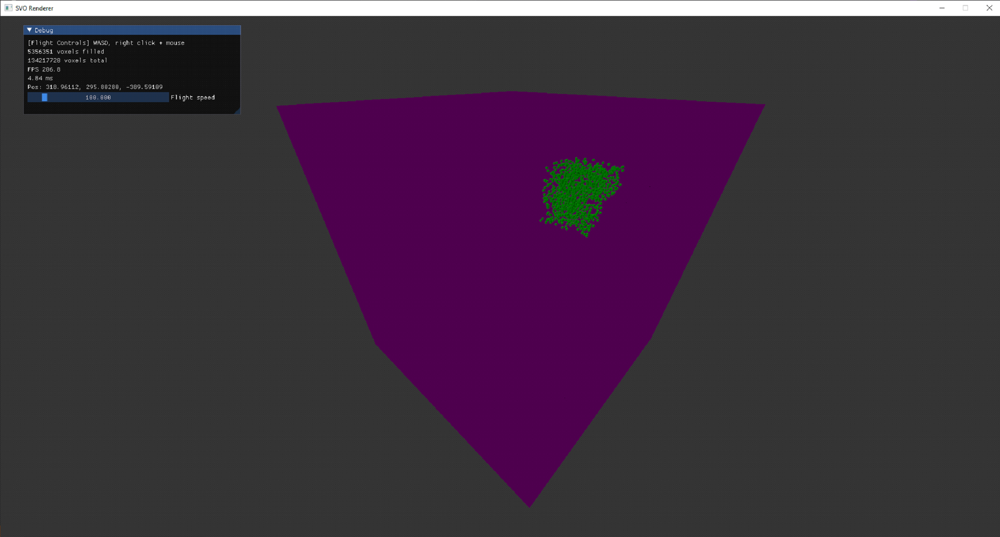
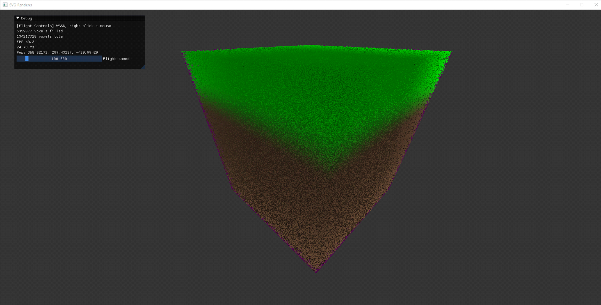

In order to more thoroughly debug my traversal algorithm, I needed to improve my camera controls. Three sliders for XYZ coordinates was good enough to get a prototype up and running, but it was becoming increasingly important to view the voxels at a variety of angles. My goal was to program camera controls similar to those found in Unreal Engine’s editor. The mouse would rotate the camera, while WASD would translate you along your forward and right vector.
This was relatively quick to implement since SDL already has functionality to grab the mouse X and Y deltas each frame. All I needed to do was feed these into a function that rotates the forward and right vectors. After that, I could calculate the up vector by taking the cross product of forward and right.
Additionally, I added the forward, up, and right vectors to a constant buffer for my ray tracer to use when calculating the ray direction for a given pixel. The X/Y ray direction is calculated by multiplying the pixel position (normalized to [-1, 1]) by the right and up vectors respectively. The final direction calculation comes out as:
float3 direction = normalize(Pixel_X * RIGHT + Pixel_Y * UP + FORWARD)
Traversal Algorithm Improvements
The new traversal algorithm now traverses along the ray, moving up and down the octree to locate the appropriate leaf node to render. There are four possibilities when traversing along the ray:
⦁ Entering an empty voxel: Move along the ray to the next voxel ⦁ Entering a voxel that is non-empty and non-leaf: Move down the octree to the node’s children ⦁ Entering a voxel that is non-empty and leaf: Done! Render the voxel ⦁ Exiting a voxel: Move up the octree one level of depth. Repeat until we’re no longer exiting the newly calculated voxel depth (i.e. we’re no longer exiting roots)
These are continued in a loop until the ray leaves the root voxel or a leaf node is hit.
When I began flying through the SVO I noticed significant frame drops when I was inside the structure. This was because the algorithm was fully traversing down/up the SVO for nodes behind me! Leaf nodes that get rendered are only in front of the camera, so there was no sense in searching for leaf nodes we would never render anyway. To account for this, I added a check that prevents the algorithm from travelling down the octree if the node is completely behind the camera. It will only traverse down if the camera is inside the node or the node is in front of the camera. Effectively, it treats nodes behind the camera as being empty and skips over them. After adding this change the frame rate became much more consistent and I was able to explore the inside of the SVO without frame drops.
Dealing With Constant Buffer Limits
In DirectX 11 a constant buffer can only contain 4096 float4 vectors. If you do the math, that’s only 65,536 bytes… far less than I would need to store a 512x512x512 SVO.
Rendering using a constant buffer. Purple represents empty space. 
A constant buffer clearly wasn’t going to cut it. My first thought was to encode the data in a texture. I began digging into the DX11 documentation to figure out how to do this when I ran into something called a Structured buffer. A Structured buffer is a buffer that holds structured data i.e an array of structs. Unlike a cbuffer it also doesn’t require you to specify a specific size in the shader. Additionally, a StructuredBuffer is required to support at least 2GB of data! This was exactly the tool I needed for the job. I added this new buffer to my pixel shader, set up the DX11 API to upload my data to the buffer, and voila! I was now able to render millions of voxels.
The switch out was extremely easy in the shader code since indexing into the structured buffer was exactly the same as indexing into the cbuffer’s array; I just needed to make sure I gave my structured buffer the same variable name.
Rendering using a structured buffer (5 million+ voxels here, 134 million+ volumetrically) 
Demo
Here is a demo of me flying through/around the SVO. (The white box is a light which renders overtop the SVO… I already fixed this but you’ll have to excuse it in this video)
What's Next?
The ray-tracer is already in a great spot, being able to render millions of voxels per frame, just as I had set out to do at the beginning of this project. However, there are still plenty of additions to be made!
Going forward I plan to write an SVO terrain generation algorithm. I also plan to research the possibility of adding/removing voxels. This is going to require the SVO to be rebuilt in some cases. Thus, I’ll have to find a way to speed up the SVO rebuild.